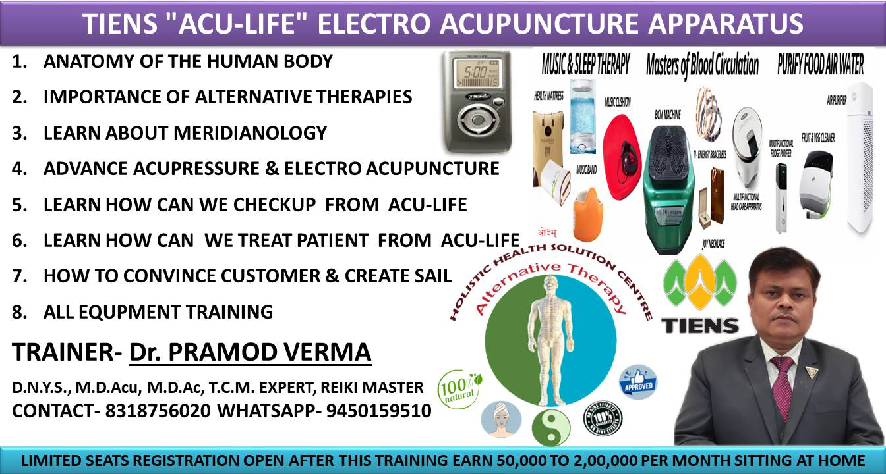

Advanced Acupresser
Acupressure is an ancient form of massage that is one of the treatment methods used in Traditional Chinese Medicine. The goal of acupressure (as well as other Chinese Medicine treatments), is to encourage the movement of qi ("life energy") through the 14 channels (meridians) inside the body. These are the same energy meridians and acupoints as those targeted with acupuncture. Chinese Medicine theory states that the constant flow of qi through these channels is essential for a person to keep their health. If this energy flow is blocked, the body can no longer maintain the balance that is needed to maintain high energy and deal with health issues.
Acupressure consists of pressing the acupuncture points in an attempt to help the free flow of energy in the channel(s). Acupressure is similar to acupuncture, but the person uses their fingers instead of needles to work the point. During a treatment or self treatment, a person will experience a slight pain when the proper acupuncture point is pressed.
Tuina is the most popular form of acupressure performed in China and is part of the training of most acupuncturists trained in the United States. Other forms are shen tao, which uses very light pressure applied only with the fingertips, and a Japanese form, anma, which has developed into a popular form now recognized as shiatsu.
Book an Apointment
Electro Acupuncter
According to the Chinese Traditional Medicine (CTM) theory, the body has vital energy called ‘Chi’ or ‘Qi’ that flows along main and collateral channels connecting our organs with other parts of the body. According to the CTM theory “Block causes pain, no block no pain”.With the Aculife Magnetic Wave Therapist there are no drugs or needles involved.The Aculife Magnetic Wave Therapist was developed as a result of 16 years of co-ordinated research into the effects of magnetism and magnetic therapy in Japan, China and Taiwan. Its rapid success in the last two years is attributed to its grounding in Eastern medicine and the ease of application and use.The Aculife Magnetic Wave Therapist was developed as a result of 16 years of co-ordinated research into the effects of magnetism and magnetic therapy in Japan, China and Taiwan.
Its rapid success in the last two years is attributed to its grounding in Eastern medicine and the ease of application and use.
Physiotherapists and other health professionals increasingly use acupuncture, thought field therapy and reflexology in conjunction with other treatments that embrace the philosophy of treating and balancing the whole body. Check out the testimonials section of this site, which gives details of one Irish physiotherapy practice using Aculife in daily clinics.
Magnetic therapies or acupuncture don't actually 'cure' anything - nor do they ever claim to. Their role is to stimulate the body's natural defence mechanisms into extraordinary action. Aculife does this by creating a magnetic wave from the palm of the hand to the ear and this wave action goes to the root of any energy blockages in the meridians in the body. It is a mirror of traditional acupuncture, without the needles.
A pain on the body always indicates a blocked channel or a shortage of blood and Qi. As per CTM, better blood circulation serves as the key to the rheumatism treatment, as it removes blockages of channels and restores the circulation of blood, thereby relieving pain. Tiens Acu-Life Electro Acupuncture Apparatus uses pain-free method to clear the body channels to relieve pain, heal chronic ailments and prevent diseases.
Based on the theories of the CTM main and collateral channels, Acu-Life adopts the electromagnetic wave to acupuncture body acupoints to adjust the channels and clear blockages. As a result, blood, Qi and internal organs stimulate free circulation of blood. While correcting the abnormal conditions of the organs, Acu-Life does not impact the normal physiological functions of the body. This product is easy to operate and safe to use
Tiens Acu-life Electro Acupuncter
According to the Chinese Traditional Medicine (CTM) theory, the body has vital energy called ‘Chi’ or ‘Qi’ that flows along main and collateral channels connecting our organs with other parts of the body. According to the CTM theory “Block causes pain, no block no pain”.
With the Aculife Magnetic Wave Therapist there are no drugs or needles involved.The Aculife Magnetic Wave Therapist was developed as a result of 16 years of co-ordinated research into the effects of magnetism and magnetic therapy in Japan, China and Taiwan. Its rapid success in the last two years is attributed to its grounding in Eastern medicine and the ease of application and use.The Aculife Magnetic Wave Therapist was developed as a result of 16 years of co-ordinated research into the effects of magnetism and magnetic therapy in Japan, China and Taiwan.
Its rapid success in the last two years is attributed to its grounding in Eastern medicine and the ease of application and use.
Physiotherapists and other health professionals increasingly use acupuncture, thought field therapy and reflexology in conjunction with other treatments that embrace the philosophy of treating and balancing the whole body. Check out the testimonials section of this site, which gives details of one Irish physiotherapy practice using Aculife in daily clinics.
Magnetic therapies or acupuncture don't actually 'cure' anything - nor do they ever claim to. Their role is to stimulate the body's natural defence mechanisms into extraordinary action. Aculife does this by creating a magnetic wave from the palm of the hand to the ear and this wave action goes to the root of any energy blockages in the meridians in the body. It is a mirror of traditional acupuncture, without the needles.
A pain on the body always indicates a blocked channel or a shortage of blood and Qi. As per CTM, better blood circulation serves as the key to the rheumatism treatment, as it removes blockages of channels and restores the circulation of blood, thereby relieving pain. Tiens Acu-Life Electro Acupuncture Apparatus uses pain-free method to clear the body channels to relieve pain, heal chronic ailments and prevent diseases.
Based on the theories of the CTM main and collateral channels, Acu-Life adopts the electromagnetic wave to acupuncture body acupoints to adjust the channels and clear blockages. As a result, blood, Qi and internal organs stimulate free circulation of blood. While correcting the abnormal conditions of the organs, Acu-Life does not impact the normal physiological functions of the body. This product is easy to operate and safe to use
Product Advantages
Compared with other similar mono-functioning products in the market, Acu-Life has many advantages:
Acu-Life effectively focuses on the hand acupoints and adopts the acupuncture treatment principles.
Without piercing the skin, Acu-Life uses the electromagnetic wave to bring a healthy and safe effect.
With an advanced technology, fashionable look of high quality, Acu-Life is very easy to use.
Product Functions and Features：
1. Acupoint probe: easily and accurately probes the acupoints. (Always use specialized hand point diagram)
2. Channel invigoration: by using electromagnetic wave to stimulate the acupoint and clearing the channels, this product improves blood circulation and metabolism and strengthens the immunity through magnetizing the body fluid.
3. Health care effect: improves the blood circulation, strengthens immune system and prevents diseases.
4. Adjustment: through hand point stimulation, those who are weak will be replenished while those who are over-nurtured will excrete.
5. Easy to use: proper understanding and usage of hand-points diagram makes this product easy to use for a family.
6. Portability: Portable size makes it easy to carry, convenient and saves space.
7. Power saver: Uses less power for longer duration.
The cost of medical care in India has been widely reported to be going through the roof in recent years. A single visit to a General Practitioner can cost Rs. 1000 or more. Interestingly, about 30% of all GP appointments are for a 'Check Up'. The Aculife Magnetic Wave Therapist will quickly pay for itself in the average family from detection use alone. Once you factor in the cost of prescription medicines on top of this for simple routine ailments, it becomes clear that Aculife offers tremendous value in any household. Anybody can use the Aculife at home at any time to check his or her state of health. Traditional Acupuncture is an effective form of medical treatment and can treat diseases that are considered untreatable by western medicine, but it can be painful and inconvenient.
On the other hand, the drugs and injections associated with Western treatments often bring unwanted side affects. Aculife offers many of the benefits of traditional Eastern medicine without painful needles and avoids the side affects of Western medicine as no drugs are used. Clearly the best of both worlds.
Book an Appoimtment Now
Reki
The word “Reiki” means “mysterious atmosphere, miraculous sign.” It comes from the Japanese words “rei” (universal) and “ki” (life energy). Reiki is a type of energy healing.
Energy healing targets the energy fields around the body.
According to practitioners, energy can stagnate in the body where there has been physical injury or possibly emotional pain. In time, these energy blocks can cause illness.
Energy medicine aims to help the flow of energy and remove blocks in a similar way to acupuncture or acupressure. Improving the flow of energy around the body, say practitioners, can enable relaxation, reduce pain, speed healing, and reduce other symptoms of illness.
Reiki has been around for thousands of years. Its current form was first developed in 1922 by a Japanese Buddhist called Mikao Usui, who reportedly taught 2,000 people the Reiki method during his lifetime. The practice spread to the U.S. through Hawaii in the 1940s, and then to Europe in the 1980s.
It is commonly referred to as palm healing or hands-on healing.
Book an Appoimtment Now

TCM classes
We also do take TCM classes
You may sometimes notice athletes or celebrities with purple circles on their skin from cupping. Or maybe you know someone who swears by acupuncture for their back pain or herbal teas for colds. More and more, people use practices like these from traditional Chinese medicine (TCM) to not only fight disease, but also prevent it.
TCM is an ancient system of health and wellness that’s been used in China for thousands of years. Western medicine focuses mainly on treating disease. But TCM looks at your entire well-being.
Is it safe to try and will it work? With a little background on how it’s used, you can make more informed choices to improve your health.
What’s the Idea Behind TCM?
Western medicine tends to view the body a lot like a car. It has different systems that need the right inputs and outputs. It’s very concrete and logical.
TCM, on the other hand, doesn’t focus on science and medicine. Instead, it’s based on balance, harmony, and energy. There are two central ideas behind TCM:
Qi: This is also called life energy or vital energy. The belief is that it runs throughout your body. It’s always on the move and constantly changes. TCM treatments often focus on ways to promote and maintain the flow of qi.
Yin and Yang: These are opposites that describe the qualities of qi.
Yin: night , dark, cold, feminine, negative
Yang: day, light, warm , positive, male
The belief is that everything in life has a little bit of its opposite, too, and balance is the key. For example, a drug from your doctor might heal disease. But it’s dangerous if you take too much of it.
According to TCM, these ideas play out in our bodies. When you balance the yin and yang of Qi, you feel healthy and well. If they’re out of whack, you feel sick. TCM aims to create harmony and a healthy flow of qi.
What Kind of Practices Does TCM Use?
What Kind of Practices Does TCM Use?
Several. They include:
Acupuncture: very fine needles placed gently in the skin
Cupping: heated cups that create suction on your skin
Herbs: teas, powders, and capsules made mostly from plants
Meditation: a way to sit quietly and calm your mind
Moxibustion: dried herbs burned near the skin
Tai chi: exercise with slow movements and focus on the breath
Is It Safe?
Experts believe it’s safe, if you go to someone who knows what they're doing. This is especially true of acupuncture, tai chi, cupping, and moxibustiondh
Herbs can be a little trickier. They don’t go through the same FDA process as drugs. That means there’s not as much research on them, and it can be hard to know exactly what’s in them. Plus, herbs can have side effects or impact other medicine you’re taking. Again, it’s important to go to someone who really understands their practice. And always check with your doctor first.
Does It Work?
TCM is an approach that covers a lot of ground, and results vary. The practices haven’t been studied in the same way as Western medicine. More research has been done on herbs and acupuncture than other treatments. But studies show a lot of promise:
Acupuncture is commonly accepted as a treatment for a number of conditions, including pain relief and limiting side effects from chemotherapy.
A number of herbs used in TCM are also used at well-respected, Western medicine clinics to treat anything from trouble sleeping to arthritis to menopause.
Tai chi seems to improve balance in people with Parkinson’s disease.
Cupping may help relieve pain from shingles.
Who Should Use It?
That’s a personal decision. People use TCM for anything from carpal tunnel syndrome to lowering stress. Sometimes they use it along with Western medicine. It may be a good choice if you:
Have a lot of different symptoms with no clear cause
Need to treat side effects from drugs
Have tried Western medicine but didn’t get results
Want to prevent illness
Who Should Avoid TCM?
In general, doctors suggest you don’t use it to totally replace Western medicine, especially if you have a serious condition like cancer or liver disease.
They also urge caution, especially with herbs, if you’re:
Elderly
Pregnant or breastfeeding
Scheduled for surgery (some herbs could lead to bleeding problems or prevent drugs used during surgery from working)
Taking other medicine as well
Treating a child
What Do Traditional Doctors Think of TCM?
They want to see proof that something is safe and works well before they suggest you try it. That often makes it hard for them to recommend TCM. But on the whole, research and interest in TCM is on the rise.
You can also find many leading health care centers, like the Mayo Clinic, Cleveland Clinic, and Johns Hopkins offering TCM practices such as acupuncture and herbal treatments.
How Do I Find Someone Who Practices TCM?
Your best bet is to find someone certified by the Accreditation Committee for Acupuncture and Oriental Medicine (ACAOM). They accredit schools that teach TCM, and you can check their website to find someone.
Another option is to get in touch with a school of Oriental medicine. They can sometimes refer you to their alumni.
Check with your family and friends as well -- just do your research to make sure you go to someone you can trust.